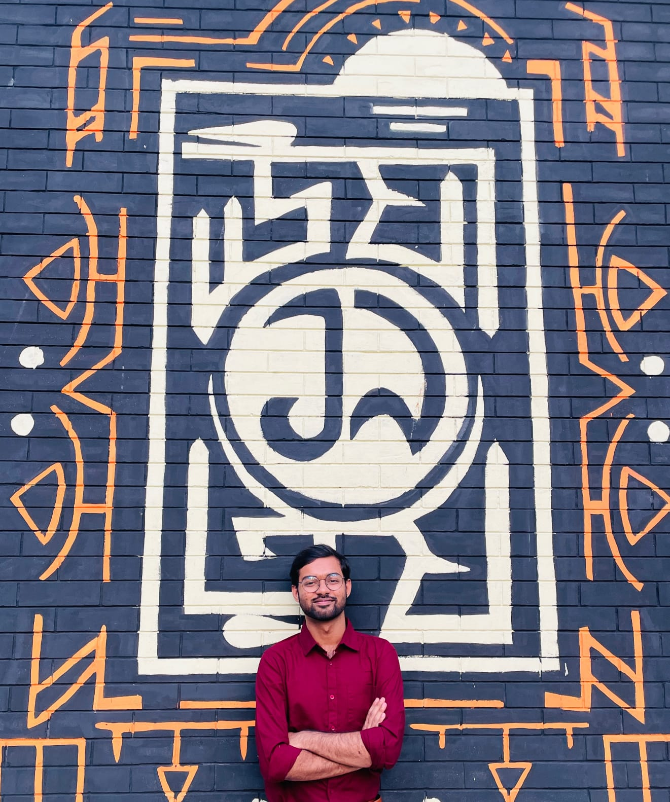

About Me
Who I Am

- Full Name
- Adnan Sakib Esa
- Location
- Tebunia,Pabna
- sakibadnan73@gmail.com
- Field of Study
- Electronics & Telecommunication Engineering
Career Goals
To become a skilled Electronics Engineer specializing in embedded systems, power electronics, and renewable energy technologies by designing intelligent automation systems and efficient power conversion solutions for real-world applications.
Bio
I am currently pursuing my B.Sc. in Electronics and Telecommunication Engineering (ETE) at Rajshahi University of Engineering & Technology (RUET). As an enthusiastic and dedicated engineering student, I have a strong interest in power electronics, VLSI design, semiconductor devices, and digital hardware systems. Through my academic coursework and laboratory projects, I have developed practical and analytical skills in circuit analysis, control systems, MATLAB/Simulink, and PCB design. I have hands-on experience with simulation, system modeling, and electronic circuit implementation. My growing interest in hardware-efficient system design has motivated me to explore VLSI design, digital logic, and hardware description languages such as Verilog. I am particularly interested in the intersection of power electronics and semiconductor technology, focusing on efficient power conversion systems and integrated hardware solutions. I continuously work on strengthening my fundamentals in digital electronics, embedded systems, and chip-level design while improving my problem-solving and research abilities. I am eager to apply my technical knowledge in real-world engineering challenges and contribute to innovative solutions in the semiconductor and power electronics industry.